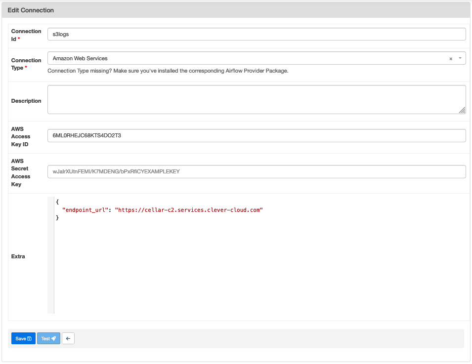

📊 Plateforme de données¶
Ce projet contient l’environnement d’execution d’Airflow
Les fichiers qui concerne la plateforme data :
pyproject.tomldéfinition des dépendances dans la section [tool.poetry.group.airflow.dependencies]./dagsrépertoire dans lequels sont stockés tous les dags executés sur le cluster Airflowairflow-scheduler.Dockerfileetairflow-webserver.Dockerfile, fichier de configuration docker executer dans tous les environnementsdocker-compose.ymlorchestre les dockers en envronnemnt de développement./dags/testsrépertoire qui contient les tests des dags
Environnements¶
On distingue 3 environements:
development: airflow tourne localement en utilisant l’orchestrateurdocker compose(cf. docker-compose.yml)preprodetprod: airflow tourne sur CleverCloud
Mise à jour du scheduler et du webserver sur CleverCloud¶
Airflow tourne sur CleverCloud sur un ensemble de serveur par environnement et utilise les services suivant:
-airflow-webserver (instance docker): interface d’airflow -airflow-scheduler (instance docker): scheduler d’airflow, fait tourner les dags car on est configuré en LocalExecutor -airflow-s3 : S3 pour stocker les logs et les dags -airflow-postgres : base de données nécessaire au fonctionnelment d’airflow
Les répertoires s3 sont en cours de migration vers la plateforme Scaleway
Déploiement et configuration¶
CI/CD¶
la platefome Data est déployée en preprod à chaque mise à jour de la branche main sur Github (cf. cd.yml)
Et en production à chaque depot de tag de version (cf. cd_prod.yml)
De la même manière que l’interface, cela permet de garder la cohérance entre l’application web et la plateforme data
Configuration du cluster Airflow¶
Variable d’environnement du cluster Airflow¶
En plus des variables d’environnement nécessaire pour configurer Airflow, les variables d’environnemnt suivantes doivent-être configurées sur le docker scheduler de chaque environnement dans CleverCloud.
Un exemple à adapter selon l’environnement est disponible sur le fichier .env.templates
Gestion des logs¶
Pour que les logs du scheduler soient stockés sur S3, les instances CleverCloud sont lancés avec les variables d’environnement:
AIRFLOW__LOGGING__REMOTE_LOGGING=true
AIRFLOW__LOGGING__REMOTE_BASE_LOG_FOLDER=s3://qfdmo-airflow-logs
AIRFLOW__LOGGING__REMOTE_LOG_CONN_ID=s3logs
AIRFLOW__LOGGING__ENCRYPT_S3_LOGS=false
s3logs est une connection configuré dans l’interface d’Airflow

Attention à ajouter le paramètre endpoint_url pour le stockage Cellar de CleverCloud